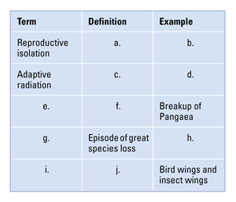
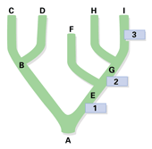

Reviewing Concepts
Multiple Choice
Choose the letter of the best answer.
1. Which of the following is not an example of a reproductive barrier?
a. Mallard ducks and pintail ducks mate at different times of the year.
b. Two species of flowers are pollinated by different insects.
c. Two populations of oak trees grow on opposite banks of a river.
d. Two species of leopard frogs have different mating calls.
2. What process most likely could account for the diversity of finch species on the Galápagos Islands?
a. convergent evolution
b. adaptive radiation
c. punctuated equilibrium
d. continental drift
3. Divisions on the geologic time scale are marked by
a. gradual disappearance of species.
b. regular intervals of time.
c. distinct changes in the types of fossilized life.
d. radioactive dating.
4. Mass extinctions that occurred in the past
a. were followed by diversification of some of the survivors.
b. occurred roughly every million years.
c. cut the number of species to the few left today.
d. wiped out land animals but had little effect on marine life.
5. Two worms in the same class must also be grouped in the same
a. order.
b. genus.
c. family.
d. phylum.
6. Organisms in the same clade must
a. belong to the same genus.
b. belong to the same species.
c. share a common ancestor that belongs to the same clade.
d. not share a common ancestor.
Short Answer
7. How does the biological species concept define a species?
8. Give an example in which differences in behavior prevent similar species from interbreeding.
9. Describe conditions that make it possible for a species to undergo adaptive radiation.
10. How does punctuated equilibrium account for the relatively rare number of fossils that link newer species to older ones?
11. In what ways can evolution be termed a "remodeling process"? Give an example.
12. How is developmental biology helpful to biologists who study?
13. Use the geologic time scale (Figure 15-18) to estimate how long prokaryotes inhabited Earth before eukaryotes evolved.
14. How does continental drift contribute to macroevolution?
15. How much of the classification in Figure 15-24 do humans share with the leopard?
16. What are derived characters, and how are they used in taxonomy?
Visualizing Concepts
17. Copy and complete the table below.

Applying Concepts
Analyzing Information
18. Analyzing Diagrams Use the diagram of sedimentary rock layers below to answer the questions.
a. What major change in the environment occurred after layers D and E? Explain.
b. What inferences can you make about life forms at the time layer A was formed?
c. If radiometric dating identifies the rock in layer C as 425 million years old, what can you infer about the age of the fossils in layer C? In layers B and D? Explain.

19. Analyzing Diagrams Use the diagram below to answer the questions that follow.
a. Which species is the common ancestor of all those shown?
b. What do 1, 2, and 3 represent?
c. To which living species is species H most closely related?
d. How many clades are contained in the diagram? List the species in each clade.

Critical Thinking
20. Comparing and Contrasting How do analogous structures and homologous structures differ?
21. Developing Hypotheses Suggest an explanation for observations that animals and plants of India are almost completely different from the species found in nearby Southeast Asia.
22. Problem Solving A geologist estimates that a certain rock contained 12 mg of radioactive potassium-40 when it formed. The rock now contains 3 mg of the isotope. The half-life of potassium-40 is 1.3 billion years. About how old is the rock?
23. Relating Cause and Effect How does geographic isolation contribute to speciation?
24. Evaluating Models Discuss reasons why classification systems have changed over time.
25. What's Wrong With These Statements?
Briefly explain why each statement is inaccurate or misleading.
a. Two populations of mice living on opposite sides of a river are separate species.
b. Lightweight bones evolved in birds so the birds could fly.
Performance Assessment
Biology Research Project Choose an organism other than the examples in the chapter and use library references or the Internet to identify its classification from species to domain. Then identify at least one other organism with which it shares a derived character, enabling you to define a clade.